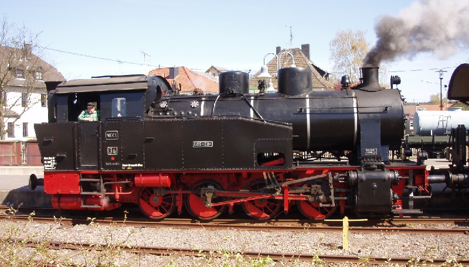

Henschel łopis
Henschel-Werke lub w skrócie Henschel – niemiecki producent maszyn i pojazdów, którego fabryki zlokalizowano w Kassel. Przedsiębiorstwo stało się wiodącym producentem lokomotyw w Europie. Od 1925 roku w zakładach w Kassel rozpoczęto produkcję autobusów i ciężarówek, a w latach 1933-1945 czołgów (w tym najcięższych typu Panzerkampfwagen VI Ausf. B „Königstiger"). W fabrykach przedsiębiorstwa Henschel w Berlinie produkowano także samoloty i pociski rakietowe.
Henschel historia
Założenie i rozwój przedsiębiorstwa w XIX wieku W 1810 roku Georg Christian Carl Henschel założył w Kassel odlewnię, w której w 1816 r. rozpoczął produkcję maszyn parowych. W 1837 r. syn Carl Anton Henschel otworzył drugą fabrykę na Placu Holenderskim (obecnie teren uniwersytetu w Kassel). Pierwsza lokomotywa parowa produkcji przedsiębiorstwa Henschel została dostarczona w 1848 roku dla potrzeb wybudowanej cztery lata wcześniej linii kolejowej Kurfürst-Friedrich-Wilhelm-Nordbahn. Przedsięwzięcia przedsiębiorstwa w pierwszej połowie XX wieku W 1905 roku w fabryce przedsiębiorstwa Henschel powstała pierwsza lokomotywa elektryczna, a pięć lat później pierwsza lokomotywa spalinowa. Zakłady Henschel stały się w tym czasie, obok Borsig-Werke największym producentem lokomotyw i w 1920 zostały przekształcone w spółkę z ograniczoną odpowiedzialnością (GmbH). W styczniu 1925 roku zmieniono nazwę spółki na Henschel & Sohn, rozpoczynając jednocześnie produkcję ciężarówek i autobusów. Około 1930 roku pojawiło się logo przedsiębiorstwa w postaci sześcioramiennej gwiazdy z umieszczoną centralnie literą H, które było używane do oznaczania samochodów i lokomotyw marki Henschel do końca lat 60. Podczas I wojny światowej w zakładach Henschel produkowano również broń, a podczas II wojny światowej przedsiębiorstwo to stało się jednym z głównych dostawców uzbrojenia dla wojsk niemieckich. Pracowano m.in. nad ciężkim czołgiem Durchbruchwagen. Ze względu na duże znaczenie fabryki przedsiębiorstwa Henschel były wielokrotnie bombardowane przez aliantów i ostatecznie prawie całkowicie zniszczone. Po wojnie, ze względu na złą sławę producenta uzbrojenia, działalność przedsiębiorstwa została ograniczona do produkcji małych lokomotyw przemysłowych i remontu ciężarówek. W 1948 r. pozwolono na budowę większych lokomotyw, a w 1961 r. w zakładach w Esslingen rozpoczęto produkcję lokomotyw spalinowych napędzanych silnikiem Diesla. W 1957 roku zmieniono firmę przedsiębiorstwa Henschel & Sohn GmbH na Henschel-Werke GmbH, a w 1962 stało się ono spółką akcyjną (AG). Od 1963 rozpoczęto produkcję autobusów. Rok później posiadający większość akcji spółki koncern Rheinstahl zdecydował o połączeniu obu przedsiębiorstw pod jedną spółkę Rheinstahl Henschel AG. W 1969 r. przeniesiono produkcję lokomotyw do przedsiębiorstwa Klöckner-Humboldt-Deutz AG w Kolonii, a samochodów do nowego przedsiębiorstwa Hanomag-Henschel powstałego z połączenia z producentem ciągników rolniczych Hanomag. Wkrótce Hanomag-Henschel został sprzedany przedsiębiorstwu Daimler-Benz, ale produkowane przez niego samochody zachowały pierwotną markę aż do 1974 roku. W 1976 r. Rheinstahl został kupiony przez August Thyssen-Hütte AG i przedsiębiorstwo po raz kolejny zmieniło nazwę, tym razem na fabryka lokomotyw Thyssen-Henschel w Kassel, ale produkowane przez zakład lokomotywy nadal były oznaczane marką Henschel. W 1990 r. wraz z przedsiębiorstwem ABB powstałym z połączenia BBC ze szwedzkim przedsiębiorstwem elektrotechnicznym ASEA, utworzono spółkę ABB Henschel z siedzibą w Mannheim. W 1995 r. na mocy umowy z przedsiębiorstwem Daimler Benz AG zawiązano ABB Daimler Benz Transportation Adtranz, oddział zajmujący się inżynierią transportu. Marka Henschel ostatecznie znikła z rynku z dniem 1 stycznia 1996 roku i została zastąpiona przez Adtranz. W 2001 roku przedsiębiorstwo zostało sprzedane międzynarodowemu konsorcjum zajmującemu się transportem kolejowym Bombardier Transportation. Do dziś w zakładach w Kassel są nadal budowane i remontowane lokomotywy elektryczne i z silnikami Diesla. Część byłych zakładów Henschel należy obecnie do przedsiębiorstwa Thyssen Krupp Transrapid GmbH, a część zbrojeniowa do koncernu Rheinmetall DeTec AG.
